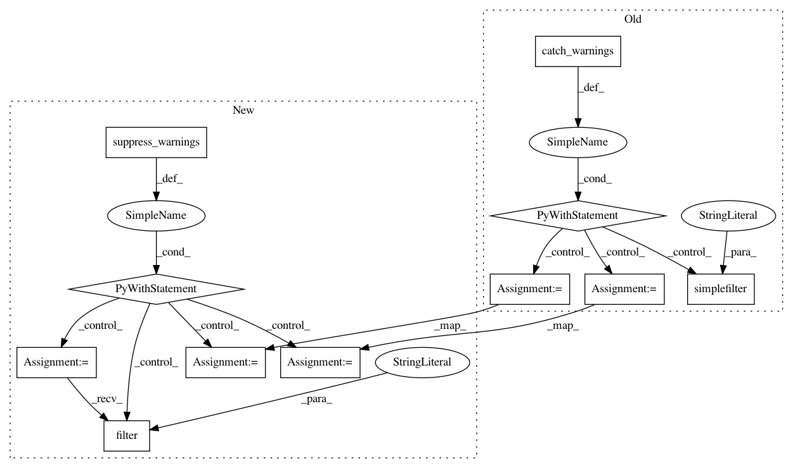

1c880c79459a63c8e36f48966142aea56626818e,scipy/sparse/linalg/isolve/tests/test_iterative.py,TestQMR,test_leftright_precond,#TestQMR#,282
Before Change
def test_leftright_precond(self):
Check that QMR works with left and right preconditioners
with warnings.catch_warnings():
warnings.simplefilter("ignore", category=SparseEfficiencyWarning)
from scipy.sparse.linalg.dsolve import splu
from scipy.sparse.linalg.interface import LinearOperator
n = 100
dat = ones(n)
A = spdiags([-2*dat, 4*dat, -dat], [-1,0,1],n,n)
b = arange(n,dtype="d")
L = spdiags([-dat/2, dat], [-1,0], n, n)
U = spdiags([4*dat, -dat], [0,1], n, n)
L_solver = splu(L)
U_solver = splu(U)
def L_solve(b):
return L_solver.solve(b)
def U_solve(b):
return U_solver.solve(b)
def LT_solve(b):
return L_solver.solve(b,"T")
def UT_solve(b):
return U_solver.solve(b,"T")
M1 = LinearOperator((n,n), matvec=L_solve, rmatvec=LT_solve)
M2 = LinearOperator((n,n), matvec=U_solve, rmatvec=UT_solve)
x,info = qmr(A, b, tol=1e-8, maxiter=15, M1=M1, M2=M2)
assert_equal(info,0)
assert_normclose(A*x, b, tol=1e-8)
class TestGMRES(object):
def test_callback(self):
def store_residual(r, rvec):
After Change
L = spdiags([-dat/2, dat], [-1,0], n, n)
U = spdiags([4*dat, -dat], [0,1], n, n)
with suppress_warnings() as sup:
sup.filter(SparseEfficiencyWarning, "splu requires CSC matrix format")
L_solver = splu(L)
U_solver = splu(U)
def L_solve(b):
return L_solver.solve(b)
def U_solve(b):
In pattern: SUPERPATTERN
Frequency: 3
Non-data size: 11
Instances
Project Name: scipy/scipy
Commit Name: 1c880c79459a63c8e36f48966142aea56626818e
Time: 2017-07-10
Author: cdouglass256@gmail.com
File Name: scipy/sparse/linalg/isolve/tests/test_iterative.py
Class Name: TestQMR
Method Name: test_leftright_precond
Project Name: scipy/scipy
Commit Name: 1c880c79459a63c8e36f48966142aea56626818e
Time: 2017-07-10
Author: cdouglass256@gmail.com
File Name: scipy/sparse/linalg/tests/test_matfuncs.py
Class Name: TestExpM
Method Name: test_padecases_dtype_sparse_float
Project Name: scipy/scipy
Commit Name: bf2c49078d1306382e4eb50b144d357ec039aee9
Time: 2017-07-15
Author: cdouglass256@gmail.com
File Name: scipy/optimize/tests/test_least_squares.py
Class Name: BaseMixin
Method Name: test_args_kwargs